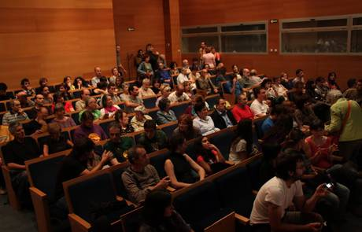

Home>Economia
Heraldo.es 26/10/2014 a las 06:00

Imagen de archivo de las XVI jornadas de Economia Solidaria
Otra economía no solo es posible, sino que ya existe. El I Congreso Internacional de Economía Social y Solidaria (ESyS), que se celebrará del 27 al 29 de noviembre en Zaragoza, servirá para poner en común experiencias de éxito de cooperación, tanto en el territorio estatal como de ámbito internacional, y reflexionar sobre los retos de futuro.
La Red de Economía Alternativa y Solidaria organiza este congreso, en colaboración con el Ayuntamiento de Zaragoza, convirtiendo la ciudad en punto de referencia de la economía social y solidaria durante el mes de noviembre.
El lema del congreso, 'La Economía se encuentra con las Personas', refleja el principal objetivo del encuentro: seguir extendiendo esa otra economía que, además de poner la vida de las personas y el medio ambiente en el centro, ha demostrado resistir mejor las crisis del capitalismo. Para ello, es esencial fortalecer las redes existentes y crear otras nuevas, así como mejorar la intercooperación entre agentes de distinta naturaleza (empresas de la ESyS, administraciones públicas, sindicatos, organizaciones sociales, etc.).El congreso contará con más de 30 actividades, agrupadas en seis ejes temáticos, entre las que habrá tanto sesiones divulgativas (mesas redondas y conferencias inspiradoras) como otras más formativas (sesiones técnicas y talleres). Las actividades se repartirán entre jueves 27, viernes 28 y sábado 29 de noviembre por la mañana y por la tarde. El jueves y el viernes, a las 19.00, habrá dos sesiones plenarias, dedicadas a las experiencias, logros y retos de la economía social y solidaria en el plano internacional y en el desarrollo comunitario y local, respectivamente.
De esta cita imperdible para las redes de economía social y solidaria y las administraciones se pretende salir con una agenda común de actuación y de construcción de políticas públicas. De hecho, en paralelo al congreso, se celebrará un Seminario sobre Administraciones Públicas y Economía Social el 26 y 27 de noviembre, también en Zaragoza. De igual modo, es importante tender puentes con la academia, lo que se materializará en el Encuentro de Jóvenes Investigadores de la Economía Social, organizado para el 28 y 29 de noviembre en Zaragoza.
Un espacio Mecambio acercará a los vecinos de Zaragoza información sobre las principales alternativas de consumo de distintos sectores (alimentación, aseguradoras, entidades bancarias, proveedoras de luz, etc.) a las que ya se pueden cambiar en su ciudad. Será el sábado 29 de noviembre, en doble sesión: a las 12.00, en La Pantera Rossa, y a las 17.00, en el Centro Joaquín Roncal.
También habrá tiempo para el ambiente festivo. Además de contar con una variada oferta cultural durante los tres días, el congreso cerrará con una gran gala de premios a entidades de la Economía Social y Solidaria la noche del sábado 29 de noviembre, a partir de las 20.00.
Para más información e inscripciones, visita economiameeting.net/es/inscribete/.
Ir al suplemento de Economía Social.